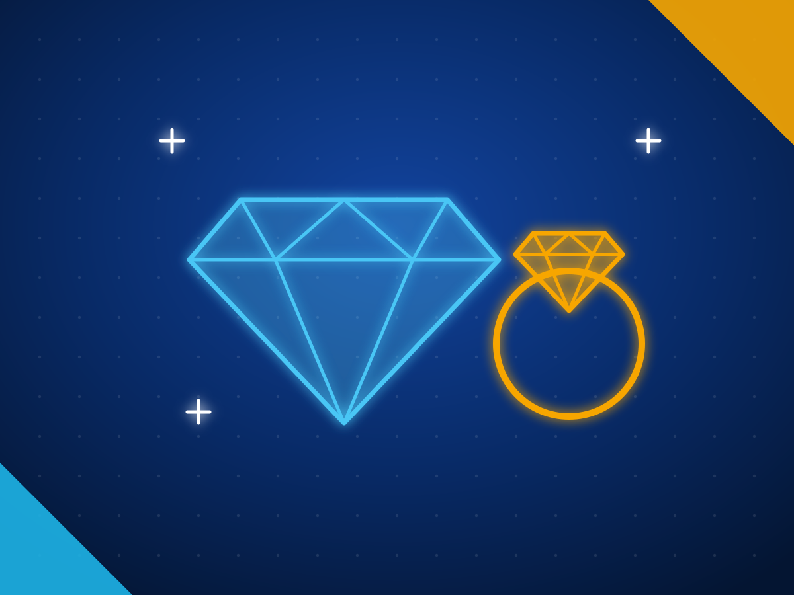

Ceylon sapphires and gems from Sri Lanka: wholesale buying guide
Sri Lanka exported US$334 million of gems, diamonds and jewellery in 2025: US$189 million of gemstones, US$127 million of diamonds and US$17.8 million of jewellery, according to the Export Development Board. It is known for Ceylon blue sapphire, padparadscha, star and fancy sapphires and spinel, mined mainly around Ratnapura and Elahera. Only cut and polished stones may be exported, every exporter needs a National Gem and Jewellery Authority licence, and about 70% of the stones exported are foreign in origin, so ask for a lab report that states origin and treatment.
Last reviewed 27 October 2026. Sources are linked next to each fact. We do not name buyers.

- US$334M
- gem, diamond and jewellery exports in 2025
- US$189M
- of that in gemstones
- 75+
- gem varieties sourced in Sri Lanka
Source: Export Development Board, gem sector 2025.
Gems and jewellery from Sri Lanka at a glance
| Main products | Blue sapphire, padparadscha, star and fancy sapphires, spinel, cat's eye, moonstone; small cut diamonds; gold jewellery |
|---|---|
| Main markets | US, Thailand, Switzerland, Hong Kong, UAE, India, France, UK, Singapore |
| Export rules | Cut and polished stones only; licensed dealers; inspection by the National Gem and Jewellery Authority and Customs |
| Reports to ask for | A government NGJA lab report or a recognised international lab report stating treatment and origin |
| Watch for | Heat treatment disclosure and country of origin |
What Sri Lankan exporters supply
| Product | HS code |
|---|---|
| Sapphires, cut and polished: blue, padparadscha, star and fancy | 7103.91 |
| Other gems, cut: spinel, cat's eye, alexandrite, moonstone, tourmaline | 7103.99 |
| Cut and polished diamonds, including small brilliants | 7102.39 |
| Gold and platinum jewellery | 7113.19 |
| Silver jewellery | 7113.11 |
HS codes at heading or six digit level. Confirm the national tariff line in your market with your customs broker.
Also traded as: Ceylon sapphire, Sri Lankan sapphire, padparadscha, blue sapphire, spinel.
Why buyers source gems and jewellery from Sri Lanka
- Gem, diamond and jewellery exports earned US$334 million in 2025: gemstones US$189 million, diamonds US$127 million and jewellery US$17.8 million. EDB
- Ratnapura and Elahera are the main gem fields, and Sri Lanka exports Ceylon blue sapphire, padparadscha, star sapphires and fancy sapphires. EDB
- The Export Development Board ranks Sri Lanka as the ninth largest exporter of precious stones, with more than 75 varieties. EDB
- Sri Lanka is the second largest supplier of spinel to the world gem market. EDB
- Sri Lanka has no diamond mines; its diamond industry cuts imported rough and specialises in small diamonds. EDB gem report 2026
- The National Gem and Jewellery Authority runs the main government gem testing laboratory, in Colombo and Ratnapura. EDB
Certifications and standards to ask for
- NGJA dealer licence. Every gem exporter must hold an Official Gem Dealers Licence from the National Gem and Jewellery Authority, which keeps a registry of licensed dealers.
- Export inspection. Gem exports are cleared under inspection by the National Gem and Jewellery Authority and Sri Lanka Customs.
- Lab report. Not legally required for every shipment but recommended for commercial exports. A genuine report states treatments and, if you ask, origin.
- Kimberley Process. Sri Lanka is a Kimberley Process participant, which covers trade in rough diamonds.
- Treatment disclosure. In the US, sellers must disclose treatments that are not permanent or that affect value.
Know this before you buy
- Heat treatment is common. Pale geuda sapphire is heated to turn it blue, a practice dating from the 1970s, so ask for a report that says heated or no indication of heating. International Gem Society
- Padparadscha is defined by colour, and only heat treatment is accepted. Beryllium diffused stones can imitate the colour, so insist on a lab report. International Gem Society
- About 70% of the stones Sri Lanka exports are foreign in origin. If origin matters to your customer, ask for an origin determination. EDB
- Gems cannot be sent as samples under the export procedure, so plan for inspected commercial shipments. EDB export procedure
Questions to ask a Sri Lankan gem exporter
- What is your NGJA dealer licence number?
- Will each stone come with a lab report stating treatment and origin, and from which lab?
- Were the stones mined in Sri Lanka, and can you show how you know?
- Who cut the stones, and can you recut to my specification?
- What are your return terms if a lab result differs?
How we help you source gems and jewellery
Tell us the spec
Product, grade, quantity, packing, destination port, the certificates you need and when you need the first shipment.
We shortlist exporters
We match you with Sri Lankan exporters who make that product and already ship to markets like yours, and check them before we introduce them.
You deal direct
Quotes and samples come from the exporters themselves and you choose. We stay on hand for the factory visit, the first order and the first shipment.
Tell us what you need to source
Send the product, grade, quantity, destination and the certificates you need. We reply within two working days with Sri Lankan exporters who make it and already ship to markets like yours.
Common questions
Can I buy rough gemstones from Sri Lanka?
No. Only cut and polished gemstones may be exported; rough stones cannot legally leave Sri Lanka. Rough gems and diamonds can be imported duty free for cutting.
How do I check a Sri Lankan gem dealer?
Buy from a dealer with a National Gem and Jewellery Authority dealer licence, which you can check in its registry, and ask for a report from the government NGJA laboratory or another recognised lab.
Are all gems exported from Sri Lanka mined there?
No. The Export Development Board says about 70% of the stones exported are foreign in origin, and Sri Lanka has no diamond mines. Ask for an origin determination on the lab report.
What is a Ceylon sapphire?
A sapphire mined in Sri Lanka, historically called Ceylon. Sri Lanka exports blue sapphire, padparadscha, star sapphires and fancy coloured sapphires, mainly from Ratnapura and Elahera.
Other products from Sri Lanka
- Apparel and textiles
- Ceylon tea
- Ceylon cinnamon
- Coconut food products
- Coco peat and coir
- Coconut shell activated carbon
- Industrial and solid tyres
- Rubber gloves and rubber products
- Electrical and electronics
- Spices and essential oils
- Processed food and beverages
- Seafood
- Light engineering and machinery
- Boats and marine
- Fruits and vegetables
- Cut foliage and live plants
- Ornamental fish
- Ceramics and porcelain
- Printing and packaging
- Wood products and furniture
- Footwear and leather goods
- Graphite and minerals
- Ayurveda and herbal products
See also: All Sri Lankan export categories · How to import from Sri Lanka · Request a quote · For Sri Lankan exporters